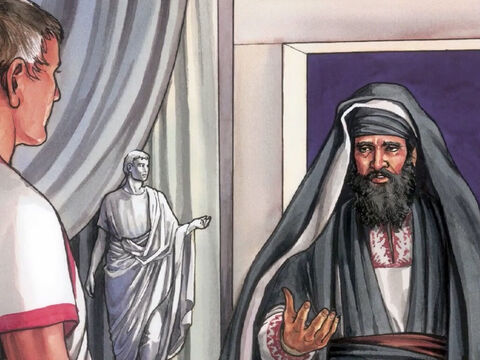
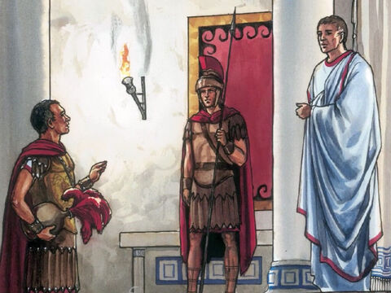
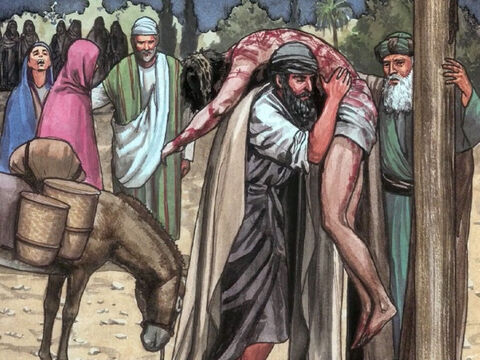
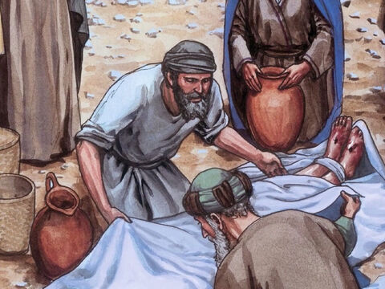
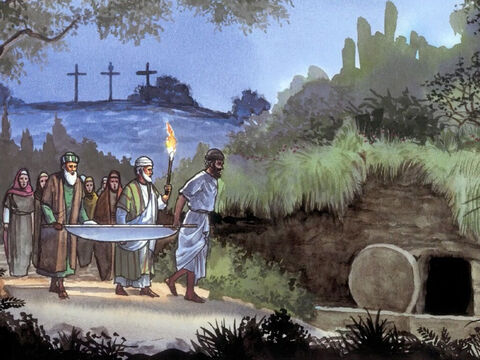
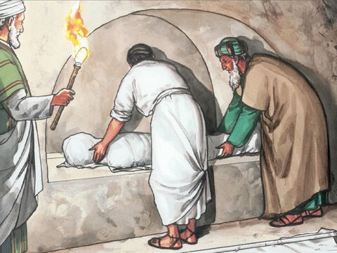
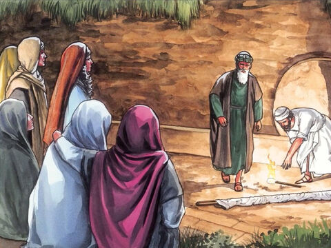
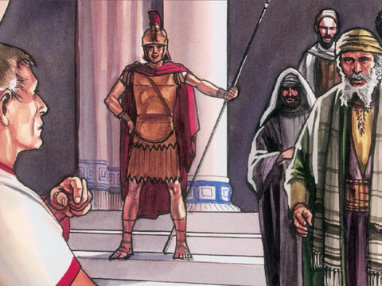
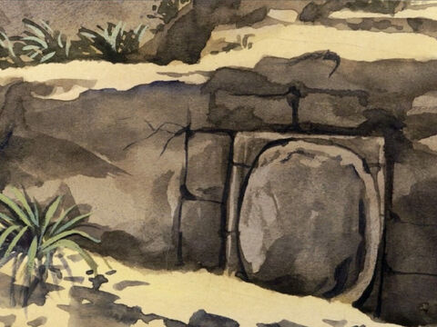

Lord Jesus Is Buried
And after this Joseph of Arimathaea, being a disciple of Jesus, but secretly for fear of the Jews, besought Pilate that he might take away the body of Jesus: and Pilate gave him leave. He came therefore, and took the body of Jesus.
And there came also Nicodemus, which at the first came to Jesus by night, and brought a mixture of myrrh and aloes, about an hundred pound weight.
Then took they the body of Jesus, and wound it in linen clothes with the spices, as the manner of the Jews is to bury.
Now in the place where he was crucified there was a garden; and in the garden a new sepulchre, wherein was never man yet laid.
There laid they Jesus therefore because of the Jews' preparation day; for the sepulchre was nigh at hand.
John 19:38-42
And the women also, which came with him from Galilee, followed after, and beheld the sepulchre, and how his body was laid.
And they returned, and prepared spices and ointments; and rested the sabbath day according to the commandment.
Luke 23:55-56
Now the next day, that followed the day of the preparation, the chief priests and Pharisees came together unto Pilate,
Saying, Sir, we remember that that deceiver said, while he was yet alive, After three days I will rise again.
Command therefore that the sepulchre be made sure until the third day, lest his disciples come by night, and steal him away, and say unto the people, He is risen from the dead: so the last error shall be worse than the first.
Pilate said unto them, Ye have a watch: go your way, make it as sure as ye can.
So they went, and made the sepulchre sure, sealing the stone, and setting a watch.
Matthew 27:62-66
- 
- 
- 
- 
- 
- 
- 
- 
- 